Introduction to financial indicators with dmplot
Source:vignettes/intro-to-financial-indicators-with-dmplot.Rmd
intro-to-financial-indicators-with-dmplot.RmdIntroduction
This vignette explains how to calculate and interpret common
financial indicators used in technical analysis. We’ll cover the
mathematics behind each indicator and demonstrate the functions used to
calculate them as well as leverage those provided by
dmplot. Finally, we’ll demonstrate how to visualise these
indicators using the dmplot package.
Licensing
The dmplot package is released under the MIT license,
allowing free use and modification. Users must:
- Cite the original author (see LICENSE for details).
- Include the license in any redistribution.
Setup
See the getting started for installing the recommended libraries: Getting Started with The dmplot Framework
Loading Sample Data
We’ll use the same sample data as in the README:
box::use(kucoin[ get_market_data ])
ticker <- "BTC/USDT"
data <- get_market_data(
symbols = ticker,
from = "2024-06-30 11:34:17 EST", # lubridate::now() - lubridate::days(7),
to = "2024-07-07 11:34:12 EST", # lubridate::now(),
frequency = "1 hour"
)
head(data)
#> symbol datetime open high low close volume
#> <char> <POSc> <num> <num> <num> <num> <num>
#> 1: BTC/USDT 2024-06-30 11:00:00 61540.9 61665.8 61518.7 61553.3 43.87309
#> 2: BTC/USDT 2024-06-30 12:00:00 61553.3 61654.9 61333.0 61490.7 63.42409
#> 3: BTC/USDT 2024-06-30 13:00:00 61490.8 61740.9 61451.1 61711.7 52.80176
#> 4: BTC/USDT 2024-06-30 14:00:00 61711.7 61846.7 61526.1 61581.7 89.92135
#> 5: BTC/USDT 2024-06-30 15:00:00 61581.7 61775.6 61580.9 61717.4 34.02352
#> 6: BTC/USDT 2024-06-30 16:00:00 61719.7 61749.6 61578.4 61601.8 27.14692
#> 1 variable(s) not shown: [turnover <num>]Calculating and Visualising Financial Indicators
Being that we adhere to “Tidy Data” principles and the
ggplot2 framework we can easily calculate and build our
visualisations in layers.
The first set is to create a set of base layers we then reuse throughout the visualisations.
Base Layers
Candlestick Chart
A candlestick chart is a type of financial chart used to represent price movements in a security. Each candlestick typically shows the open, high, low, and close prices for a specific period.
candle_plot <- data |>
ggplot2$ggplot(ggplot2$aes(
x = datetime,
open = open,
high = high,
low = low,
close = close
)) +
## ------------------------------------
dmplot$stat_candlestick() +
## ------------------------------------
ggplot2$scale_x_datetime(date_breaks = "1 day", date_labels = "%b %d") +
ggplot2$labs(
title = paste(ticker, "- Candlestick with EMA and Bollinger Bands"),
x = "Date",
y = "Price (USD)"
) +
dmplot$theme_dereck_dark() +
ggplot2$theme(axis.text.x = ggplot2$element_text(angle = 45, hjust = 1))
print(candle_plot)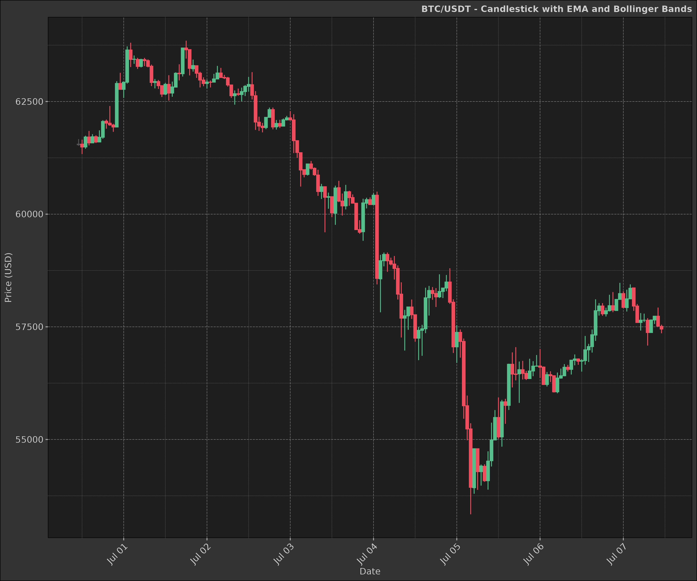
Line Chart
Sometimes we may want to visualise a single indicator or price movement over time. A line chart is a simple and effective way to do this.
line_plot <- data |>
ggplot2$ggplot(ggplot2$aes(
x = datetime,
y = close
)) +
ggplot2$geom_line(
colour = "cyan",
linewidth = 1.25,
alpha = 0.5,
na.rm = TRUE
) +
ggplot2$scale_x_datetime(date_breaks = "1 day", date_labels = "%b %d") +
ggplot2$labs(
title = paste(ticker, "- Closing Price"),
x = "Date",
y = "Price (USD)"
) +
dmplot$theme_dereck_dark() +
ggplot2$theme(axis.text.x = ggplot2$element_text(angle = 45, hjust = 1))
print(line_plot)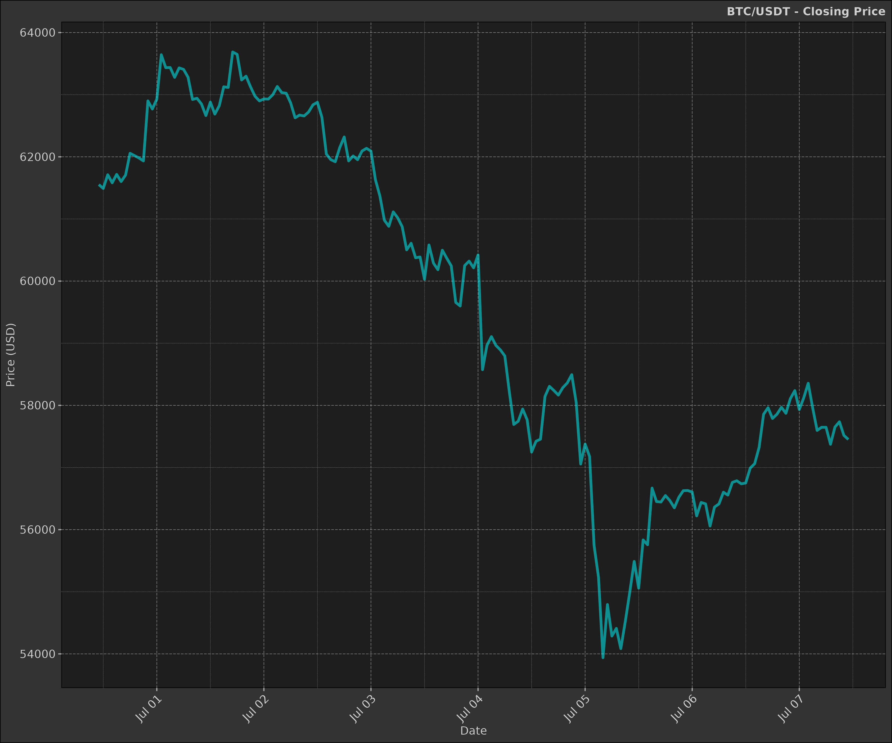
Volume
The volume indicator is not a financial indicator per se, but it is commonly used in conjunction with other indicators to confirm price trends.
volume_plot <- data |>
ggplot2$ggplot(ggplot2$aes(
x = datetime,
y = volume,
group = symbol
)) +
ggplot2$geom_bar(
stat = "identity",
ggplot2$aes(fill = ifelse(close > open, "green", "red")),
linewidth = 1,
alpha = 1,
na.rm = TRUE
) +
ggplot2$scale_x_datetime(
date_breaks = "1 day",
date_minor_breaks = "1 hour",
date_labels = "%d %b"
) +
ggplot2$scale_fill_identity() +
ggplot2$labs(
x = ggplot2$element_blank(),
y = "Volume"
) +
dmplot$theme_dereck_dark() +
ggplot2$theme(
axis.text.x = ggplot2$element_text(angle = 45, hjust = 1),
panel.grid.minor = ggplot2::element_blank()
)
print(volume_plot)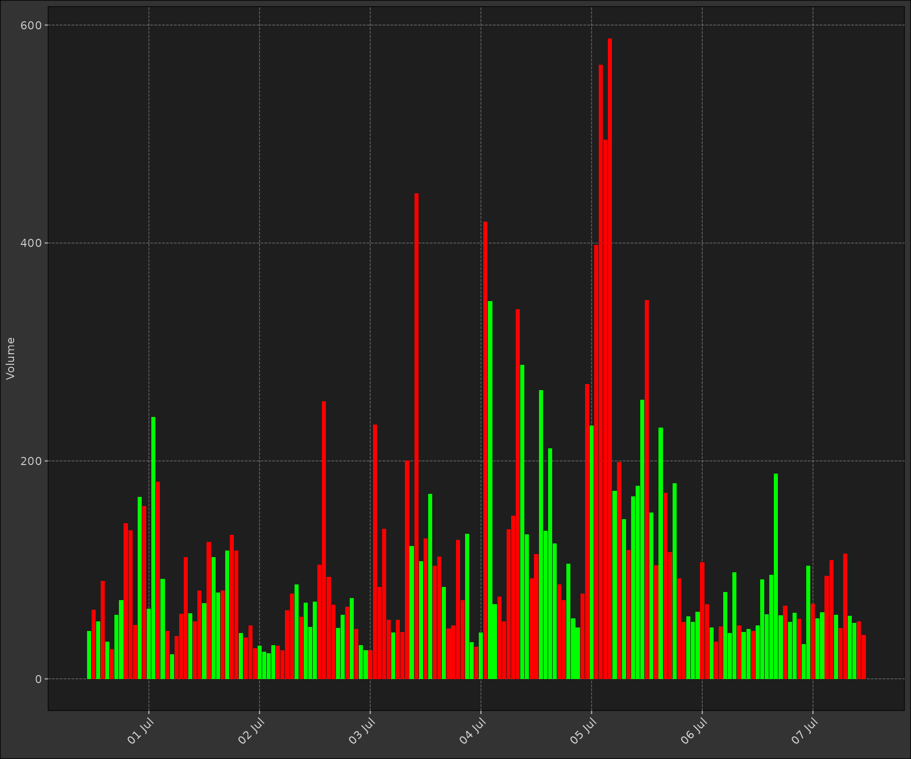
1. Simple Moving Average (SMA)
The Simple Moving Average (SMA) is the average of a security’s price over a specified number of periods.
Mathematics: for a series Y, the SMA at time t is calculated as:
\[ SMA(t) = \frac{Y(t) + Y(t-1) + ... + Y(t-n+1)}{n} \]
where n is the number of periods.
sma <- function(x, n) {
return(as.list(as.data.frame(TTR::SMA(x, n = n))))
}
data2 <- dt$copy(data)
data2[, sma_short := sma(close, n = 20)[[1]]]
data2[, sma_long := sma(close, n = 50)[[1]]]
head(data2)
#> symbol datetime open high low close volume
#> <char> <POSc> <num> <num> <num> <num> <num>
#> 1: BTC/USDT 2024-06-30 11:00:00 61540.9 61665.8 61518.7 61553.3 43.87309
#> 2: BTC/USDT 2024-06-30 12:00:00 61553.3 61654.9 61333.0 61490.7 63.42409
#> 3: BTC/USDT 2024-06-30 13:00:00 61490.8 61740.9 61451.1 61711.7 52.80176
#> 4: BTC/USDT 2024-06-30 14:00:00 61711.7 61846.7 61526.1 61581.7 89.92135
#> 5: BTC/USDT 2024-06-30 15:00:00 61581.7 61775.6 61580.9 61717.4 34.02352
#> 6: BTC/USDT 2024-06-30 16:00:00 61719.7 61749.6 61578.4 61601.8 27.14692
#> 3 variable(s) not shown: [turnover <num>, sma_short <num>, sma_long <num>]Now using the candlestick plot we created earlier, we can add the SMA layer to visualise the moving averages.
sma_layer <- dmplot$stat_movingaverages(data = data2,
ggplot2$aes(x = datetime, short = sma_short, long = sma_long),
alpha = list(mavg = 0.5)
)
print(candle_plot + sma_layer)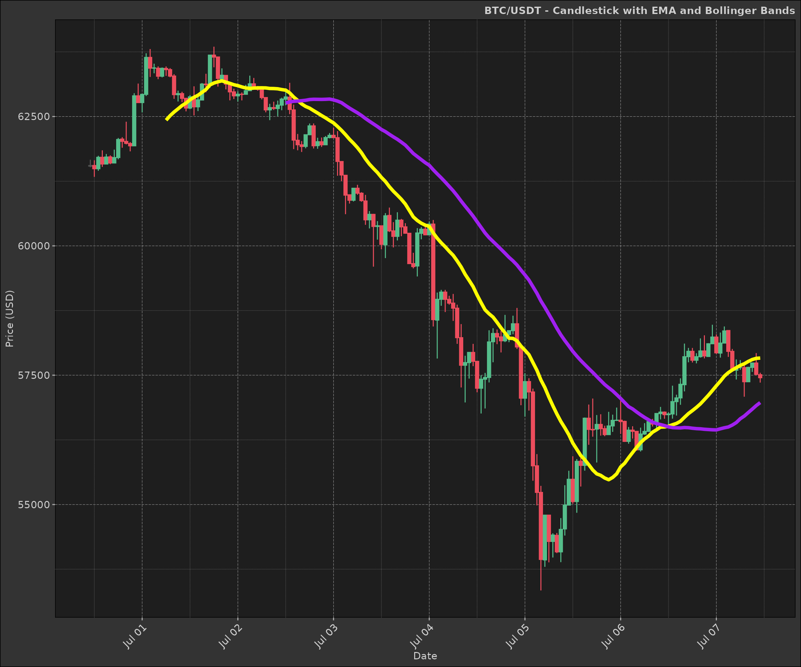
1. Exponential Moving Average (EMA)
The EMA gives more weight to recent prices, making it more responsive to new information than a simple moving average.
Mathematics: for a series Y, the EMA at time t is calculated as:
\[ EMA(t) = α * Y(t) + (1 - α) * EMA(t-1) \]
where α = 2 / (N + 1), and N is the number of periods.
ema <- function(x, n, wilder = TRUE) {
as.list(as.data.frame(TTR::EMA(x, n = n, wilder = wilder)))
}
data2 <- dt$copy(data)
data2[, `:=`(
ema_short = ema(close, n = 10, wilder = TRUE)[[1]],
ema_long = ema(close, n = 50, wilder = TRUE)[[1]]
)]
head(data2)
#> symbol datetime open high low close volume
#> <char> <POSc> <num> <num> <num> <num> <num>
#> 1: BTC/USDT 2024-06-30 11:00:00 61540.9 61665.8 61518.7 61553.3 43.87309
#> 2: BTC/USDT 2024-06-30 12:00:00 61553.3 61654.9 61333.0 61490.7 63.42409
#> 3: BTC/USDT 2024-06-30 13:00:00 61490.8 61740.9 61451.1 61711.7 52.80176
#> 4: BTC/USDT 2024-06-30 14:00:00 61711.7 61846.7 61526.1 61581.7 89.92135
#> 5: BTC/USDT 2024-06-30 15:00:00 61581.7 61775.6 61580.9 61717.4 34.02352
#> 6: BTC/USDT 2024-06-30 16:00:00 61719.7 61749.6 61578.4 61601.8 27.14692
#> 3 variable(s) not shown: [turnover <num>, ema_short <num>, ema_long <num>]
ema_layer <- dmplot$stat_movingaverages(data = data2,
ggplot2$aes(x = datetime, short = ema_short, long = ema_long),
alpha = list(mavg = 0.5),
colour = list("cyan", "magenta")
)
print(candle_plot + ema_layer)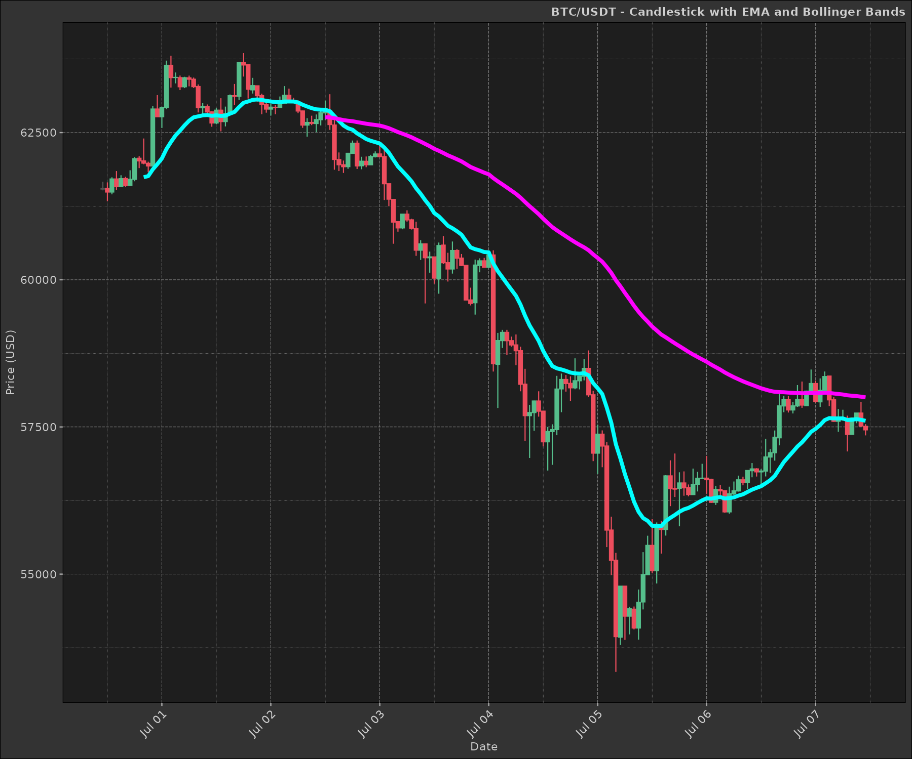
2. Bollinger Bands
Bollinger Bands consist of a middle band (usually a simple moving average) and an upper and lower band that are standard deviations away from the middle band.
Mathematics:
\[ Middle Band = SMA(n) \] \[ Upper Band = SMA(n) + k * σ(n) \] \[ Lower Band = SMA(n) - k * σ(n) \]
where SMA(n) is the n-period simple moving average, σ(n) is the n-period standard deviation, and k is the number of standard deviations (usually 2).
bb <- function(close, n = 20, sd = 2) {
as.list(as.data.frame(TTR::BBands(close, n = n, sd = sd)))
}
data2 <- dt$copy(data)
data2[, c("bb_lower", "bb_mavg", "bb_upper", "bb_pct") := bb(close, n = 10, sd = 2)]
head(data2)
#> symbol datetime open high low close volume
#> <char> <POSc> <num> <num> <num> <num> <num>
#> 1: BTC/USDT 2024-06-30 11:00:00 61540.9 61665.8 61518.7 61553.3 43.87309
#> 2: BTC/USDT 2024-06-30 12:00:00 61553.3 61654.9 61333.0 61490.7 63.42409
#> 3: BTC/USDT 2024-06-30 13:00:00 61490.8 61740.9 61451.1 61711.7 52.80176
#> 4: BTC/USDT 2024-06-30 14:00:00 61711.7 61846.7 61526.1 61581.7 89.92135
#> 5: BTC/USDT 2024-06-30 15:00:00 61581.7 61775.6 61580.9 61717.4 34.02352
#> 6: BTC/USDT 2024-06-30 16:00:00 61719.7 61749.6 61578.4 61601.8 27.14692
#> 5 variable(s) not shown: [turnover <num>, bb_lower <num>, bb_mavg <num>, bb_upper <num>, bb_pct <num>]As you can see in the plot below Bolllinger Bands are a great way to visualise price volatility and see when a security is overbought or oversold.
bb_layer <- dmplot$stat_bollingerbands(data = data2,
ggplot2$aes(ymin = bb_lower, mavg = bb_mavg, ymax = bb_upper),
colour = list("pink", "cyan", "cyan")
)
print(candle_plot + bb_layer)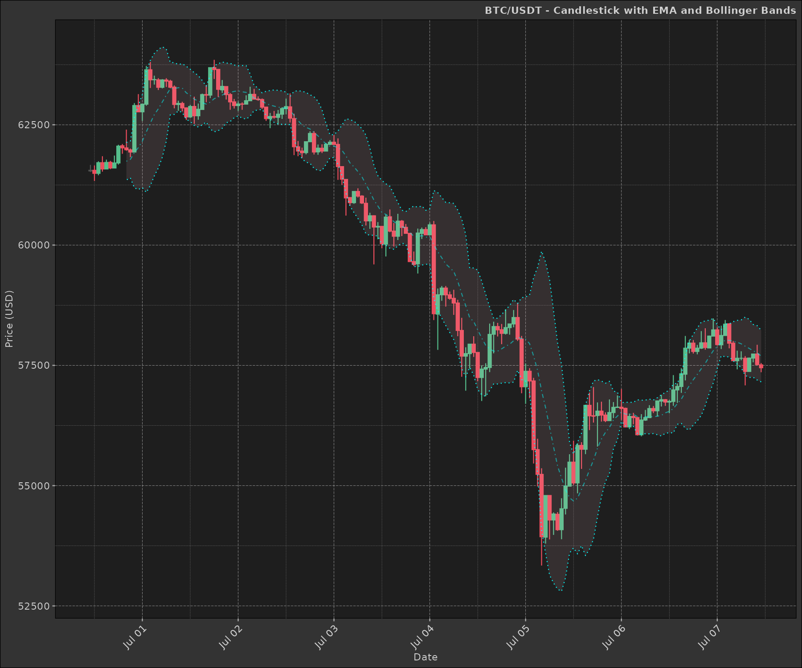
3. Fibonacci Retracement (Fib)
Fibonacci retracement is a popular tool used in technical analysis to identify potential support and resistance levels based on the Fibonacci sequence.
Mathematics:
The Fibonacci retracement levels are calculated as follows:
- 0.000 (0.0%)
- 0.236 (23.6%)
- 0.382 (38.2%)
- 0.500 (50.0%)
- 0.618 (61.8%)
- 0.786 (78.6%)
- 1.000 (100.0%)
data2 <- dt$copy(data)
high_price <- max(data2$high)
low_price <- min(data2$low)
fib_levels <- dmplot$fib(high_price, low_price)
print(fib_levels)
#> $levels
#> [1] 0.000 0.236 0.382 0.500 0.618 0.786 1.000
#>
#> $prices
#> [1] 63850.00 61369.57 59835.07 58594.85 57354.63 55588.90 53339.70In the plot we overlay the Fibonacci retracement levels on the candlestick chart to identify potential support and resistance levels.
fib_plot <- candle_plot +
ggplot2$geom_hline(
yintercept = fib_levels$prices, color = "yellow", linetype = "dashed"
) +
ggplot2$scale_y_continuous(
name = "Price",
sec.axis = ggplot2$sec_axis(
~ (. - low_price) / (high_price - low_price) * 100,
name = "Retracement %",
labels = \(x) paste0(round(x, 1), "%")
)
) +
ggplot2$labs(
title = "Price Chart with Fibonacci Retracement Levels",
x = "Date"
)
print(fib_plot)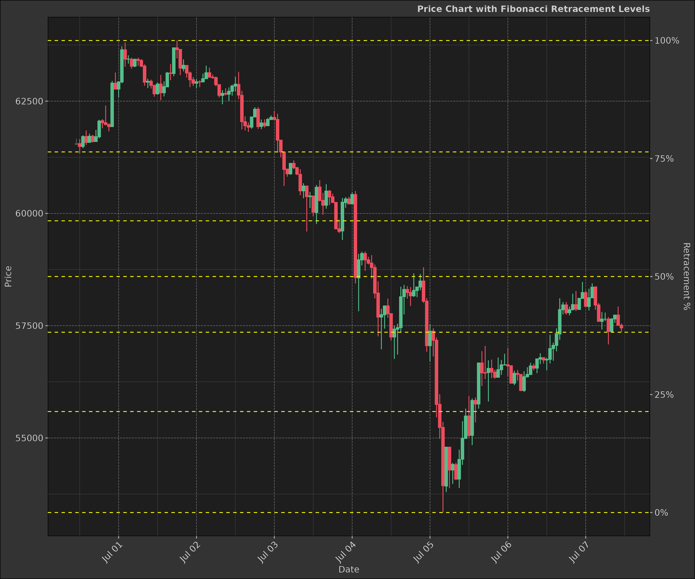
4. Moving Average Convergence Divergence (MACD)
MACD is a trend-following momentum indicator that shows the relationship between two moving averages of a security’s price.
Mathematics:
\[ MACD Line = EMA(12) - EMA(26) \] \[ Signal Line = EMA(9) of MACD Line \] \[ MACD Histogram = MACD Line - Signal Line \]
The MACD Line is the difference between a short-term EMA (12 periods) and a long-term EMA (26 periods). The Signal Line is the EMA of the MACD Line (usually 9 periods).
When the MACD Line crosses above the Signal Line, it is considered a bullish signal. When the MACD Line crosses below the Signal Line, it is considered a bearish signal.
macd <- function(x, fast = 12, slow = 26, signal = 9) {
as.list(as.data.frame(TTR::MACD(x, fast, slow, signal)))
}
data2 <- dt$copy(data)
data2[, c("macd", "macd_signal") := macd(close, fast = 12, slow = 26, signal = 9)]
data2[, macd_diff := macd - macd_signal]
head(data2)
#> symbol datetime open high low close volume
#> <char> <POSc> <num> <num> <num> <num> <num>
#> 1: BTC/USDT 2024-06-30 11:00:00 61540.9 61665.8 61518.7 61553.3 43.87309
#> 2: BTC/USDT 2024-06-30 12:00:00 61553.3 61654.9 61333.0 61490.7 63.42409
#> 3: BTC/USDT 2024-06-30 13:00:00 61490.8 61740.9 61451.1 61711.7 52.80176
#> 4: BTC/USDT 2024-06-30 14:00:00 61711.7 61846.7 61526.1 61581.7 89.92135
#> 5: BTC/USDT 2024-06-30 15:00:00 61581.7 61775.6 61580.9 61717.4 34.02352
#> 6: BTC/USDT 2024-06-30 16:00:00 61719.7 61749.6 61578.4 61601.8 27.14692
#> 4 variable(s) not shown: [turnover <num>, macd <num>, macd_signal <num>, macd_diff <num>]As you can see in the plot below, the MACD indicator is a great way to visualise the relationship between two moving averages and identify potential buy or sell signals.
Our plot below shows the two moving averages and the MACD histogram; the histogram is the difference between the MACD Line and the Signal Line.
macd_plot <- data2 |>
ggplot2$ggplot(ggplot2$aes(x = datetime)) +
dmplot$stat_macd(data = data2,
ggplot2$aes(macd = macd, macd_signal = macd_signal, macd_diff = macd_diff)
) +
dmplot$theme_dereck_dark() +
ggplot2$scale_x_datetime(date_breaks = "1 day", date_labels = "%b %d") +
ggplot2$labs(
title = paste(ticker, "- MACD"),
x = "Date",
y = "MACD Value"
) +
ggplot2$theme(axis.text.x = ggplot2$element_text(angle = 45, hjust = 1))
print(macd_plot)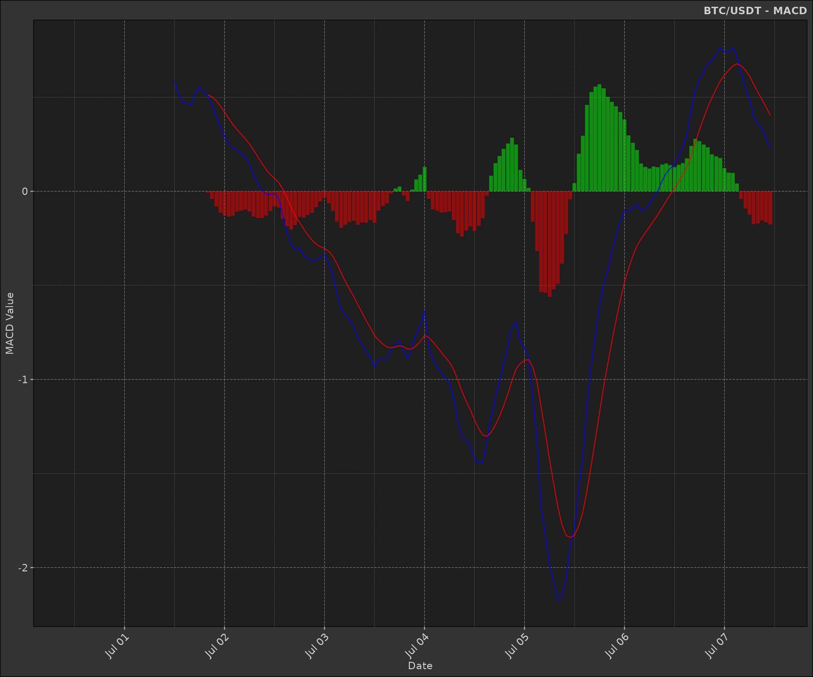
5. Relative Strength Index (RSI)
RSI is a momentum oscillator that measures the speed and change of price movements.
Mathematics:
\[ RSI = 100 - (100 / (1 + RS)) \]
where RS = Average Gain / Average Loss
\[ Average Gain = [(previous avg. gain) x 13 + current gain] / 14 \] \[ Average Loss = [(previous avg. loss) x 13 + current loss] / 14 \]
rsi <- function(x, n = 14) {
as.list(as.data.frame(TTR::RSI(x, n = n)))
}
data2 <- dt$copy(data)
data2[, rsi := rsi(close, n = 14)[[1]]]
head(data2)
#> symbol datetime open high low close volume
#> <char> <POSc> <num> <num> <num> <num> <num>
#> 1: BTC/USDT 2024-06-30 11:00:00 61540.9 61665.8 61518.7 61553.3 43.87309
#> 2: BTC/USDT 2024-06-30 12:00:00 61553.3 61654.9 61333.0 61490.7 63.42409
#> 3: BTC/USDT 2024-06-30 13:00:00 61490.8 61740.9 61451.1 61711.7 52.80176
#> 4: BTC/USDT 2024-06-30 14:00:00 61711.7 61846.7 61526.1 61581.7 89.92135
#> 5: BTC/USDT 2024-06-30 15:00:00 61581.7 61775.6 61580.9 61717.4 34.02352
#> 6: BTC/USDT 2024-06-30 16:00:00 61719.7 61749.6 61578.4 61601.8 27.14692
#> 2 variable(s) not shown: [turnover <num>, rsi <num>]The RSI provides a visual representation of the strength of a security’s price movement. It is often used to identify overbought or oversold conditions.
rsi_plot <- na.omit(data2) |>
ggplot2$ggplot(ggplot2$aes(x = datetime)) +
ggplot2$geom_line(ggplot2$aes(y = rsi, colour = "RSI")) +
ggplot2$geom_hline(
yintercept = c(30, 70),
linetype = "dashed",
colour = "yellow"
) +
ggplot2$scale_x_datetime(date_breaks = "1 day", date_labels = "%b %d") +
ggplot2$scale_y_continuous(limits = c(0, 100)) +
ggplot2$scale_color_manual(values = c("RSI" = "cyan")) +
ggplot2$labs(
title = paste(ticker, "- RSI"),
x = "Date",
y = "RSI Value"
) +
dmplot$theme_dereck_dark() +
ggplot2$theme(
axis.text.x = ggplot2$element_text(angle = 45, hjust = 1),
legend.position = "none"
)
print(rsi_plot)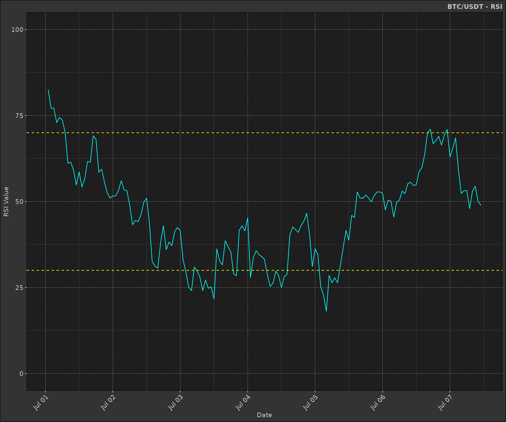
6. Rate of Change (ROC) / Momentum
The Rate of Change (ROC) indicator measures the percentage change in price between the current price and the price n periods ago.
Mathematics:
\[ ROC = \frac{Close - Close_{n}}{Close_{n}} \]
where n is the number of periods.
This is often used as a momentum indicator to identify overbought or oversold conditions.
Notice how we execute a second calculation to normalise the momentum values between -1 and 1.
\[ Momentum = \frac{ROC}{max(|ROC|)} \]
data2 <- dt$copy(data)
data2[, mom := TTR::ROC(close, n = 2L)]
data2[, mom := mom / max(abs(mom), na.rm = TRUE)]
head(data2)
#> symbol datetime open high low close volume
#> <char> <POSc> <num> <num> <num> <num> <num>
#> 1: BTC/USDT 2024-06-30 11:00:00 61540.9 61665.8 61518.7 61553.3 43.87309
#> 2: BTC/USDT 2024-06-30 12:00:00 61553.3 61654.9 61333.0 61490.7 63.42409
#> 3: BTC/USDT 2024-06-30 13:00:00 61490.8 61740.9 61451.1 61711.7 52.80176
#> 4: BTC/USDT 2024-06-30 14:00:00 61711.7 61846.7 61526.1 61581.7 89.92135
#> 5: BTC/USDT 2024-06-30 15:00:00 61581.7 61775.6 61580.9 61717.4 34.02352
#> 6: BTC/USDT 2024-06-30 16:00:00 61719.7 61749.6 61578.4 61601.8 27.14692
#> 2 variable(s) not shown: [turnover <num>, mom <num>]The Momentum indicator is a simple way to visualise the rate of change in price over a specified number of periods.
mom <- data2 |>
ggplot2$ggplot(ggplot2$aes(
x = datetime,
y = mom,
group = symbol
)) +
## ------------------------------------
# momentum
ggplot2$geom_line(
colour = "yellow",
linewidth = 1.25,
alpha = 0.5,
na.rm = TRUE
) +
## ------------------------------------
# zero line
ggplot2$geom_hline(
yintercept = 0, colour = "grey", size = 1, linetype = "dashed"
) +
ggplot2$scale_x_datetime(
date_breaks = "1 day", date_minor_breaks = "1 hour", date_labels = "%d %b"
) +
ggplot2$labs(
x = ggplot2::element_blank(),
y = "Momentum"
) +
dmplot$theme_dereck_dark() +
ggplot2$theme(
axis.text.x = ggplot2$element_text(angle = 90),
panel.grid.minor = ggplot2$element_blank()
)
print(mom)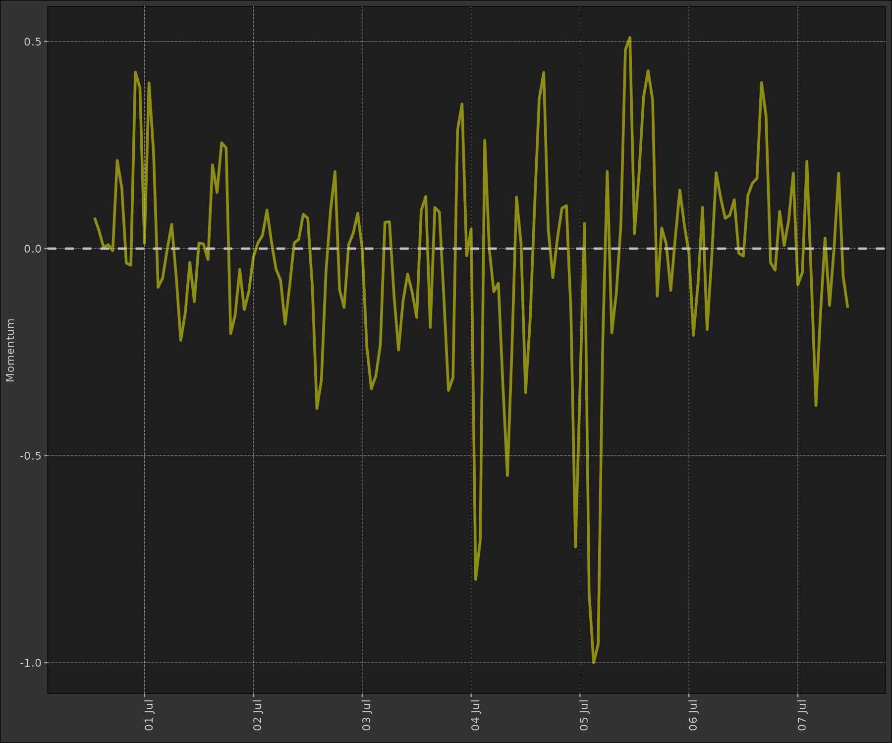
7. Stochastic Oscillator
The Stochastic Oscillator is a momentum indicator that shows the location of the close relative to the high-low range over a set number of periods.
Mathematics:
\[ %K = (Current Close - Lowest Low)/(Highest High - Lowest Low) * 100 \]
\[ %D = 3-day SMA of %K \]
stoch <- function(high, low, close, n = 14, k = 3, d = 3) {
as.list(as.data.frame(TTR::stoch(HLC = data.frame(high, low, close), nFastK = n, nFastD = k, nSlowD = d)))
}
data2 <- dt$copy(data)
data2[,
c("fastK", "fastD", "slowD") := stoch(high, low, close, n = 14, k = 3, d = 3)
]
# similarly to the momentum indicator, we normalise the values between 0 and 100
data2[, fastK := fastK / max(abs(fastK), na.rm = TRUE) * 100]
data2[, fastD := fastD / max(abs(fastD), na.rm = TRUE) * 100]
data2[, slowD := slowD / max(abs(slowD), na.rm = TRUE) * 100]
head(data2)
#> symbol datetime open high low close volume
#> <char> <POSc> <num> <num> <num> <num> <num>
#> 1: BTC/USDT 2024-06-30 11:00:00 61540.9 61665.8 61518.7 61553.3 43.87309
#> 2: BTC/USDT 2024-06-30 12:00:00 61553.3 61654.9 61333.0 61490.7 63.42409
#> 3: BTC/USDT 2024-06-30 13:00:00 61490.8 61740.9 61451.1 61711.7 52.80176
#> 4: BTC/USDT 2024-06-30 14:00:00 61711.7 61846.7 61526.1 61581.7 89.92135
#> 5: BTC/USDT 2024-06-30 15:00:00 61581.7 61775.6 61580.9 61717.4 34.02352
#> 6: BTC/USDT 2024-06-30 16:00:00 61719.7 61749.6 61578.4 61601.8 27.14692
#> 4 variable(s) not shown: [turnover <num>, fastK <num>, fastD <num>, slowD <num>]The Stochastic Oscillator is used to identify overbought or oversold conditions. When the %K line crosses above the %D line, it is considered a buy signal. When the %K line crosses below the %D line, it is considered a sell signal.
- Dotted yellow lines represent the overbought (80) and oversold (20) levels.
- Purple line represents the Fast %K line; this represents the current close relative to the high-low range over the last 14 periods.
- Yellow line represents the Slow %D line; this is a 3-day SMA of the Fast %K line.
If the Fast %K line crosses above the Slow %D line, it is considered a buy signal. If the Fast %K line crosses below the Slow %D line, it is considered a sell signal.
stoch_plot <- na.omit(data2) |>
ggplot2$ggplot(ggplot2$aes(x = datetime)) +
ggplot2$geom_line(ggplot2$aes(y = fastK, colour = "Fast %K")) +
ggplot2$geom_line(ggplot2$aes(y = slowD, colour = "Slow %D")) +
ggplot2$geom_hline(
yintercept = c(20, 80),
linetype = "dashed",
colour = "yellow"
) +
ggplot2$scale_x_datetime(date_breaks = "1 day", date_labels = "%b %d") +
ggplot2$scale_y_continuous(limits = c(0, 100)) +
ggplot2$scale_color_manual(values = c("Fast %K" = "magenta", "Slow %D" = "yellow")) +
ggplot2$labs(
title = paste(ticker, "- Stochastic Oscillator"),
x = "Date",
y = "Value"
) +
dmplot$theme_dereck_dark() +
ggplot2$theme(axis.text.x = ggplot2$element_text(angle = 45, hjust = 1))
print(stoch_plot)
Pulling it all together
Now that we have built the individual layers, we can combine them into a single plot to visualise all the indicators together.
For this we use the gridExtra package to arrange the
plots in a grid layout.
box::use(gridExtra)Candlestick Chart + RSI + Volume
Now we will have some fun and combine the candlestick chart, RSI, and volume plots into a single layout.
candle_plot_minus_x_axis <- candle_plot +
ema_layer +
bb_layer +
ggplot2$theme(
axis.text.x = ggplot2$element_blank(),
axis.title.x = ggplot2$element_blank()
) +
ggplot2$labs(
title = paste(ticker, "- Candlestick, EMA, Bollinger Bands, RSI, MACD, Volume"),
y = "Price (USD)"
)
rsi_plot_minus_x_axis <- rsi_plot +
ggplot2$theme(
axis.text.x = ggplot2$element_blank(),
axis.title.x = ggplot2$element_blank()
) +
ggplot2$labs(title = NULL, y = "RSI")
macd_plot_minus_x_axis <- macd_plot +
ggplot2$theme(
axis.text.x = ggplot2$element_blank(),
axis.title.x = ggplot2$element_blank()
) +
ggplot2$labs(title = NULL, y = "MACD")
gridExtra$grid.arrange(
candle_plot_minus_x_axis,
rsi_plot_minus_x_axis,
macd_plot_minus_x_axis,
volume_plot,
ncol = 1,
heights = c(3, 1, 1, 1)
)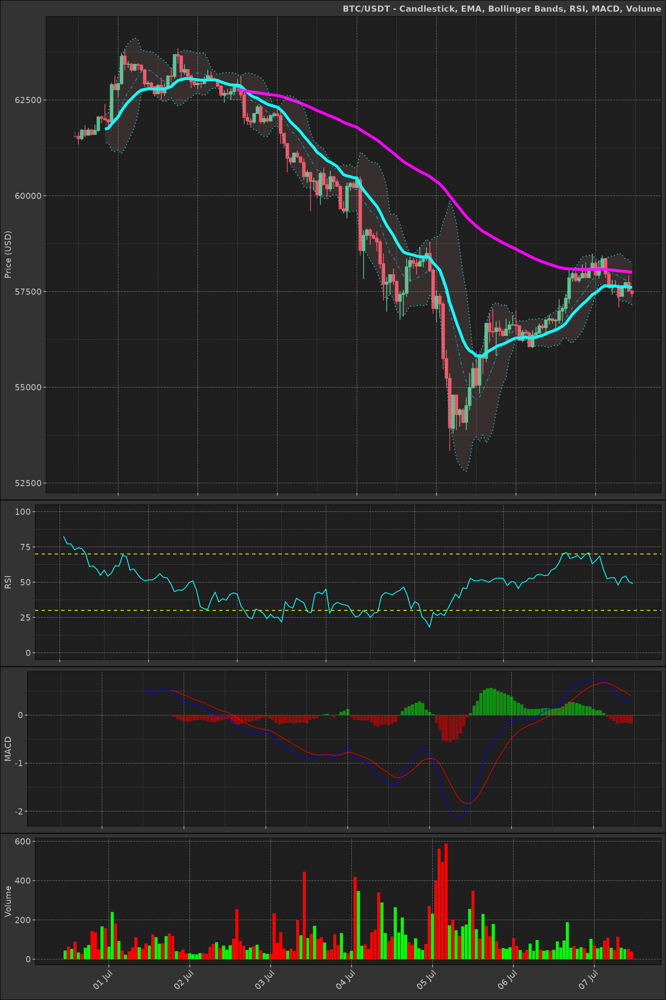
Challenge: can you adjust the left padding on the plots so the y-axis labels all align?
Conclusion
This vignette has demonstrated how to calculate and visualise various
financial indicators using the dmplot package. We’ve
covered the mathematics behind each indicator and provided R functions
to calculate them. By combining these indicators with the visualisation
capabilities of dmplot, you can create comprehensive and
insightful financial charts.
Remember that while these indicators can be powerful tools for technical analysis, they should be used in conjunction with other forms of analysis and not relied upon exclusively for making investment decisions.
For more advanced usage and customisation options, refer to the
individual function documentation in the dmplot package and
explore combining multiple indicators to create more complex trading
strategies.